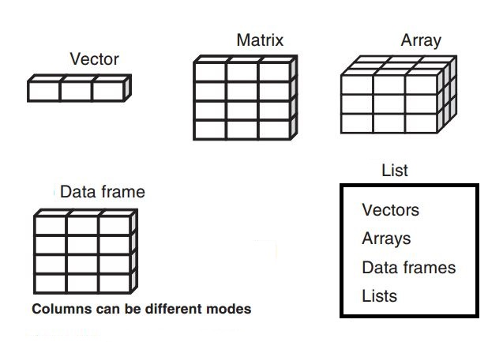

Code
library(tidyverse)This document provides a detailed overview of the fundamental data structures in R, with explanations and code examples.

A vector is a one-dimensional, ordered collection of elements. A key characteristic of vectors is that all elements must be of the same data type (homogeneous). They are the simplest and most common data structure in R.
Here, we create a numeric vector using the c() (combine) function.
The class() function confirms that the vector is of type “numeric”.
This example creates a character vector.
The seq() function generates a sequence of numbers.
The rep() function repeats a value a specified number of times.
The sample() function takes a random sample from a set of elements. replace = FALSE means each element can only be chosen once.
With replace = TRUE, elements can be chosen multiple times.
runif() generates random numbers from a uniform distribution.
rnorm() generates random numbers from a normal distribution.
The unique() function removes duplicate elements from a vector.
You can combine vectors by using the c() function.
Negative indexing removes elements at the specified positions.
Remove the first element:
Remove the last element:
Remove elements based on a vector of indices:
sort() arranges vector elements in ascending or descending order.
length() returns the number of elements in a vector.
Mathematical functions can be applied to entire vectors.
Select the first element:
Select the last element:
Select a range of elements:
setdiff(x, y) finds elements that are in vector x but not in vector y.
as.* functions are used to coerce vectors from one type to another.
A data frame is a two-dimensional, heterogeneous data structure, similar to a spreadsheet or a SQL table. Each column can have a different data type, but all elements within a column must be of the same type. It is the most common data structure for storing datasets in R.
Name Language Age
1 Amiya R 22
2 Raj Python 25
3 Asish Java 45Converting a data frame to a matrix will coerce all elements to the most flexible data type (usually character).
You can extract a single column as a vector using $ or [[ ]] notation.
A matrix is a two-dimensional, homogeneous data structure. All elements must be of the same type. It has a fixed number of rows and columns.
[,1] [,2] [,3]
[1,] 1 2 3
[2,] 4 5 6
[3,] 7 8 9Access the element in the 2nd row, 3rd column:
Access the entire 1st row:
Access the entire 3rd column:
Matrices support element-wise mathematical operations.
A list is a one-dimensional, heterogeneous data structure. Unlike vectors, lists can contain elements of different types, including other lists, vectors, or even functions.
$ID
[1] 1 2 3 4
$Names
[1] "Debi" "Sandeep" "Subham" "Shiba"
$Total
[1] 4Use [[index]] or [[name]] to access the content of a single list element. Use $ as a shortcut for named elements.
Access the second element (a vector):
Access the element named “item3” (a data frame):
Use the $ operator for the same result:
An array is a multi-dimensional, homogeneous data structure. It can have two or more dimensions.
This example creates a 3D array with 2 rows, 2 columns, and 2 “layers”.
, , 1
[,1] [,2]
[1,] 1 3
[2,] 2 4
, , 2
[,1] [,2]
[1,] 5 7
[2,] 6 8Elements are accessed using [row, column, dimension] notation.
Access the element in the 1st row, 2nd column of the 2nd dimension (layer):
Access the entire first matrix (1st layer):
Understanding the structure of your data is a critical first step in any analysis. R provides several useful functions for this.
The str() (structure) function is one of the most useful diagnostic tools in R. It provides a compact, human-readable summary of any R object, showing its type, dimensions, and a preview of its content.
'data.frame': 3 obs. of 3 variables:
$ Name : chr "Amiya" "Raj" "Asish"
$ Language: chr "R" "Python" "Java"
$ Age : num 22 25 45class(): Returns the high-level class of an object.typeof(): Returns the internal storage type of an object.length(): Returns the number of elements in a vector or list.dim(): Returns the dimensions (e.g., rows and columns) of a data frame, matrix, or array.names() or colnames(): Returns the column names of a data frame, matrix, or list.[1] "data.frame"https://www.geeksforgeeks.org/data-structures-in-r-programming/
---
title: "Data Structures in R"
execute:
warning: false
error: false
format:
html:
toc: true
toc-location: right
code-fold: show
code-tools: true
number-sections: true
code-block-bg: true
code-block-border-left: "#31BAE9"
---
This document provides a detailed overview of the fundamental data structures in R, with explanations and code examples.
{width="600"}
```{r}
library(tidyverse)
```
# Vectors
A vector is a one-dimensional, ordered collection of elements. A key characteristic of vectors is that all elements must be of the same data type (homogeneous). They are the simplest and most common data structure in R.
Here, we create a numeric vector using the `c()` (combine) function.
```{r}
a = c(1, 2, 3, 4)
a
```
The `class()` function confirms that the vector is of type "numeric".
```{r}
class(a)
```
This example creates a character vector.
```{r}
b = c("Debi", "Sandeep", "Subham", "Shiba")
b
```
```{r}
class(b)
```
## Creating Vectors
### Sequence Vector
The `seq()` function generates a sequence of numbers.
```{r}
seq(from = 2, to = 14, by = 2)
```
### Replicated Vector
The `rep()` function repeats a value a specified number of times.
```{r}
rep(x = 1.5, times = 4)
```
### Random Vector
The `sample()` function takes a random sample from a set of elements. `replace = FALSE` means each element can only be chosen once.
```{r}
sample(1:10, 5, replace = FALSE)
```
With `replace = TRUE`, elements can be chosen multiple times.
```{r}
sample(1:10, 5, replace = TRUE)
```
`runif()` generates random numbers from a uniform distribution.
```{r}
runif(1, min = 0, max = 1)
```
`rnorm()` generates random numbers from a normal distribution.
```{r}
sn1 <- rnorm(4, mean = 0, sd = 1) # Standard normal distribution
sn1
```
### Unique Vector
The `unique()` function removes duplicate elements from a vector.
```{r}
v1 = c(1, 1, 2, 2, 5, 6)
v1
```
```{r}
unique(v1)
```
## Vector Operations
### Append Vector
You can combine vectors by using the `c()` function.
```{r}
x = c(1, 2, 3)
y = c(4, 5, 6)
z = c(x, y)
z
```
### Remove Elements from a Vector
Negative indexing removes elements at the specified positions.
```{r}
x = c(1, 2, 3, 4, 5)
x
```
Remove the first element:
```{r}
x[-1]
```
Remove the last element:
```{r}
x[-length(x)]
```
Remove elements based on a vector of indices:
```{r}
remove = c(2, 4)
x[-remove]
```
### Sort Vector
`sort()` arranges vector elements in ascending or descending order.
```{r}
a = c(2, 4, 6, 1, 4)
sort(a)
```
```{r}
sort(a, decreasing = TRUE)
```
### Vector Length
`length()` returns the number of elements in a vector.
```{r}
length(a)
```
### Vector Calculation
Mathematical functions can be applied to entire vectors.
```{r}
x = c(1, 2, 3, 4, 5)
sum(x)
```
### Select Vector Elements
```{r}
x = c(1, 2, 3, 6, 9, 10)
```
Select the first element:
```{r}
x[1]
```
Select the last element:
```{r}
x[length(x)]
```
Select a range of elements:
```{r}
x[1:3]
```
### Compare Two Vectors
`setdiff(x, y)` finds elements that are in vector `x` but not in vector `y`.
```{r}
xx = c(1, 2, 3, 4)
yy = c(2, 4)
setdiff(xx, yy)
```
## Converting Between Vector Types
`as.*` functions are used to coerce vectors from one type to another.
```{r}
x <- c("a", "g", "b")
y = as.factor(x)
y
```
```{r}
x <- c('123', '44', '222')
y = as.numeric(x)
y
```
# Data Frames
A data frame is a two-dimensional, heterogeneous data structure, similar to a spreadsheet or a SQL table. Each column can have a different data type, but all elements within a column must be of the same type. It is the most common data structure for storing datasets in R.
```{r}
Name = c("Amiya", "Raj", "Asish")
Language = c("R", "Python", "Java")
Age = c(22, 25, 45)
df = data.frame(Name, Language, Age)
df
```
## Data Frame to Other Formats
### Data Frame to Matrix
Converting a data frame to a matrix will coerce all elements to the most flexible data type (usually character).
```{r}
mat <- as.matrix(df)
mat
```
### Data Frame to Vector
You can extract a single column as a vector using `$` or `[[ ]]` notation.
```{r}
vec = df[['Name']]
vec
```
# Matrices
A matrix is a two-dimensional, homogeneous data structure. All elements must be of the same type. It has a fixed number of rows and columns.
```{r}
A = matrix(
c(1, 2, 3, 4, 5, 6, 7, 8, 9),
nrow = 3,
ncol = 3,
byrow = TRUE # Fill the matrix row by row
)
A
```
Access the element in the 2nd row, 3rd column:
```{r}
A [2, 3]
```
Access the entire 1st row:
```{r}
A[1, ]
```
Access the entire 3rd column:
```{r}
A [, 3]
```
Matrices support element-wise mathematical operations.
```{r}
matrix002 = A + A
matrix002
```
# Lists
A list is a one-dimensional, heterogeneous data structure. Unlike vectors, lists can contain elements of different types, including other lists, vectors, or even functions.
```{r}
empId = c(1, 2, 3, 4)
empName = c("Debi", "Sandeep", "Subham", "Shiba")
numberOfEmp = 4
empList = list(ID = empId, Names = empName, Total = numberOfEmp)
empList
```
## Accessing List Elements
Use `[[index]]` or `[[name]]` to access the content of a single list element. Use `$` as a shortcut for named elements.
Access the second element (a vector):
```{r}
empList[[2]]
```
Access the element named "item3" (a data frame):
```{r}
empList[["Names"]]
```
Use the `$` operator for the same result:
```{r}
empList$Names
```
# Arrays
An array is a multi-dimensional, homogeneous data structure. It can have two or more dimensions.
This example creates a 3D array with 2 rows, 2 columns, and 2 "layers".
```{r}
my_array = array(
c(1, 2, 3, 4, 5, 6, 7, 8),
dim = c(2, 2, 2)
)
my_array
```
## Accessing Array Elements
Elements are accessed using `[row, column, dimension]` notation.
Access the element in the 1st row, 2nd column of the 2nd dimension (layer):
```{r}
my_array[1, 2, 2]
```
Access the entire first matrix (1st layer):
```{r}
my_array[, , 1]
```
# Inspecting Data Structures
Understanding the structure of your data is a critical first step in any analysis. R provides several useful functions for this.
## The str() Function
The `str()` (structure) function is one of the most useful diagnostic tools in R. It provides a compact, human-readable summary of any R object, showing its type, dimensions, and a preview of its content.
```{r}
str(df)
```
```{r}
str(empList)
```
## Other Inspection Functions
- `class()`: Returns the high-level class of an object.
- `typeof()`: Returns the internal storage type of an object.
- `length()`: Returns the number of elements in a vector or list.
- `dim()`: Returns the dimensions (e.g., rows and columns) of a data frame, matrix, or array.
- `names()` or `colnames()`: Returns the column names of a data frame, matrix, or list.
```{r}
# Create a sample data frame
inspect_df <- data.frame(
ID = 1:3,
Product = c("A", "B", "C"),
Price = c(10.5, 20.0, 15.2)
)
class(inspect_df)
```
```{r}
dim(inspect_df)
```
```{r}
names(inspect_df)
```
# Reference:
https://www.geeksforgeeks.org/data-structures-in-r-programming/